למידה — עצי החלטה, אנטרופיה ו-Information Gain
⏱ זמן משוער: 75 דק'
0. האינטואיציה — לומדים מדוגמאות, לא ממישהו שמכתיב חוקים
עד עכשיו כל סוכן שפגשנו קיבל את הידע שלו מוכן: חוקי לוגיקה, פונקציית מעבר, יוריסטיקה. עכשיו השאלה הפוכה — איך סוכן בונה ידע בעצמו מתוך דוגמאות? זהו תפקידו של הסוכן הלומד (Learning Agent): רכיב Critic מקבל Performance standard ותחושות מה-Sensors, ומזין feedback ל-Learning element — הרכיב שבאמת "לומד" ומשנה את התנהגות ה-Performance element (שמפעיל את ה-Actuators). ה-Learning element גם מזין learning goals ל-Problem generator, שמציע ניסויים חדשים ל-Performance element.
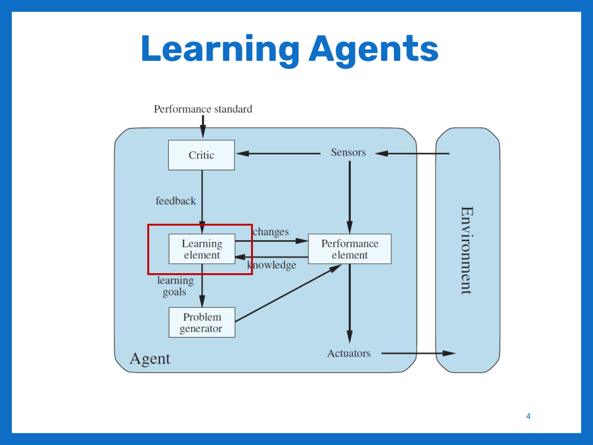
שלושה סוגי למידה לפי סוג הפידבק שהסוכן מקבל: Supervised learning — דוגמאות של קלט ופלט ראוי, כשהתשובות ניתנות ע"י מורה או ע"י ניסיון הסוכן; Unsupervised learning — אין תשובות נכונות, לומדים תבניות מתוך הקלט בלבד; Reinforcement learning — למידה מפרסים וקנסות, כשצריך לדעת כיצד הסביבה עובדת. Supervised מתפצל ל-Classification (פלט בדיד) ו-Regression (פלט רציף); Unsupervised מוביל ל-Clustering. עצי החלטה, נושא הפרק, הם דוגמה קלאסית ל-supervised classification.
בכל למידה אינדוקטיבית מקבלים זוגות (x, f(x)) — f היא פונקציית המטרה, ודוגמה היא הזוג (x, f(x)). הבעיה: מצאו היפותזה h כך ש-h ≈ f, בהינתן אוסף דוגמאות המכונה training set. היפותזה h עקבית אם כל נקודות הדוגמאות נמצאות עליה בדיוק — אבל כפי שמדגים שקף רגרסיה קלאסי, כשיש כמה היפותזות עקביות (קו ישר, פולינום חלק, עקומה משוננת שמשתלטת על כל רעש בדוגמאות) לא ברור איזו עדיפה:
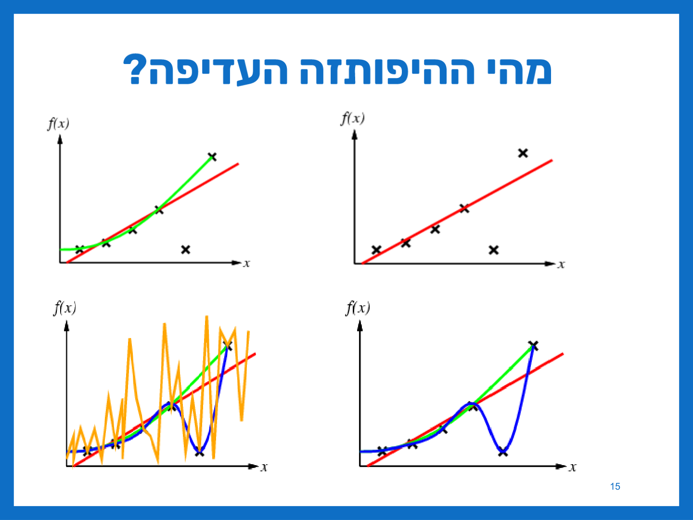
כשההיפותזה עצמה נבחרת מראש להיות קו ישר (רגרסיה לינארית), נשאר לבחור את הקו הטוב ביותר מבין כל הקווים האפשריים — לפי סכום ריבועי השגיאות Σⱼ (yⱼ − w₀xⱼ − w₁)², ובוחרים את LOSS = Min₍w1,w0₎ Σⱼ(yⱼ−w₀xⱼ−w₁)² — ההיפותזה שממזערת את פונקציית השגיאה (משטח קעור שממנו קל למצוא מינימום).
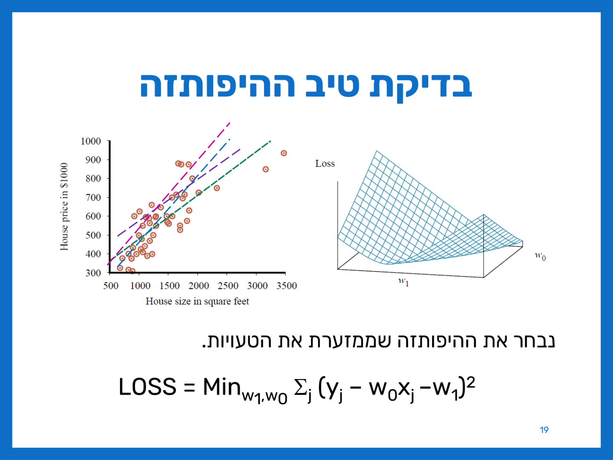
מקור: 15-decision-trees.pdf (עמ' 2–19)
1. עצי החלטה — מבנה ובעיית ההמתנה במסעדה
עץ החלטה: הקלט הוא סיטואציה המתוארת ע"י מאפיינים (attributes), הפלט הוא החלטה — סיווג הקלט לאחד מכמה פלטים אפשריים (פונקציה בדידה). קודקוד פנימי הוא מבחן על אחד המאפיינים, וענפיו היוצאים הם הערכים האפשריים למבחן הזה; עלה מכיל את ערך הפלט שמוחזר אם מגיעים אליו.
דוגמת העבודה המרכזית של הפרק — "האם נחכה לשולחן במסעדה?" עשרה מאפיינים: Alternate (יש מסעדה חלופית קרובה), Bar (יש בר להמתנה), Fri/Sat (סופ"ש), Hungry (רעבים), Patrons (None/Some/Full), Price ($/$$/$$$), Raining, Reservation, Type (French/Italian/Thai/Burger) ו-WaitEstimate (0-10/10-30/30-60/>60).
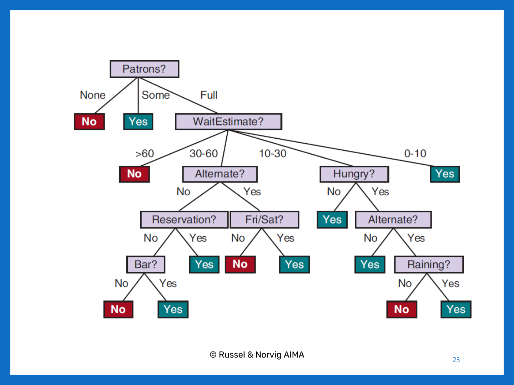
מקור: 15-decision-trees.pdf (עמ' 20–24)
2. Attribute-based Representation — טבלת 12 הדוגמאות
קבוצת האימון (training set) של הבעיה: 12 דוגמאות, שלכל אחת יש ערך לכל אחד מעשרת המאפיינים, ותווית פלט WillWait (Yes/No).
| Example | Alt | Bar | Fri | Hun | Pat | Price | Rain | Res | Type | Est | WillWait |
|---|---|---|---|---|---|---|---|---|---|---|---|
| x1 | Yes | No | No | Yes | Some | $$$ | No | Yes | French | 0–10 | Yes |
| x2 | Yes | No | No | Yes | Full | $ | No | No | Thai | 30–60 | No |
| x3 | No | Yes | No | No | Some | $ | No | No | Burger | 0–10 | Yes |
| x4 | Yes | No | Yes | Yes | Full | $ | Yes | No | Thai | 10–30 | Yes |
| x5 | Yes | No | Yes | No | Full | $$$ | No | Yes | French | >60 | No |
| x6 | No | Yes | No | Yes | Some | $$ | Yes | Yes | Italian | 0–10 | Yes |
| x7 | No | Yes | No | No | None | $ | Yes | No | Burger | 0–10 | No |
| x8 | No | No | No | Yes | Some | $$ | Yes | Yes | Thai | 0–10 | Yes |
| x9 | No | Yes | Yes | No | Full | $ | Yes | No | Burger | >60 | No |
| x10 | Yes | Yes | Yes | Yes | Full | $$$ | No | Yes | Italian | 10–30 | No |
| x11 | No | No | No | No | None | $ | No | No | Thai | 0–10 | No |
| x12 | Yes | Yes | Yes | Yes | Full | $ | No | No | Burger | 30–60 | Yes |
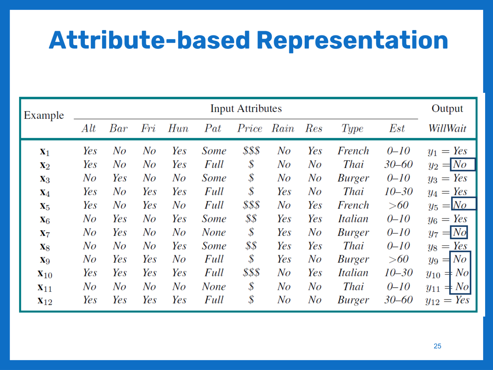
6 דוגמאות חיוביות (x1,x3,x4,x6,x8,x12) ו-6 שליליות (x2,x5,x7,x9,x10,x11) — חלוקה מאוזנת של 50/50 שנשתמש בה בהמשך לחישוב האנטרופיה ההתחלתית.
מקור: 15-decision-trees.pdf (עמ' 25–29)
3. בחירת המאפיין הראשון — Patrons מול Type
הרעיון המרכזי בבניית העץ: לבדוק ראשון את המאפיין הכי חשוב — זה שמחלק את הדוגמאות לתתי-קבוצות טהורות ככל האפשר (רק חיוביות או רק שליליות). כך נקווה שלא נצטרך לבדוק מאפיינים רבים נוספים, והעץ יהיה נמוך וקומפקטי.
נשווה בין שני מועמדים: Patrons (3 ערכים) ו-Type (4 ערכים).
- Patrons: None → 2 שליליות בלבד (טהור!); Some → 4 חיוביות בלבד (טהור!); Full → 2 חיוביות + 4 שליליות (מעורב).
- Type: בכל אחד מארבעת הערכים (French, Italian, Thai, Burger) יש תמהיל מעורב של חיוביות ושליליות — הפיצול לא מבודד כלום.
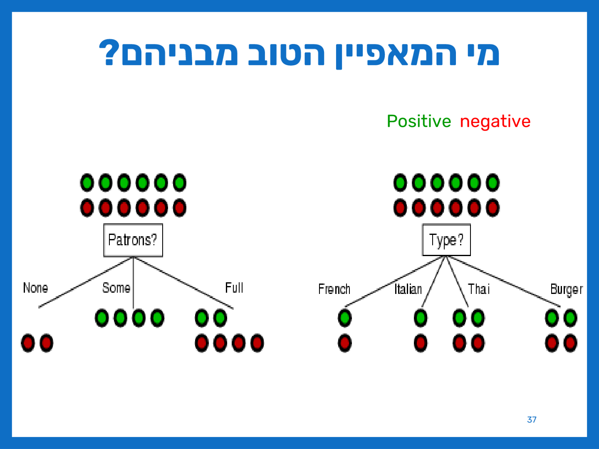
זו הערכה ויזואלית בלבד — עדיין לא כימתנו "כמה יותר טוב". זה בדיוק מה שהאנטרופיה ו-Information Gain, בבלוקים הבאים, נותנים לנו: מספר מדויק להשוואה בין כל שני מאפיינים.
מקור: 15-decision-trees.pdf (עמ' 30–38)
4. תורת האינפורמציה — נוסחת האנטרופיה
ב-1948 הגדיר קלוד שאנון את הביט כיחידת מידע ואת האנטרופיה של מקור מידע — כמות הביטים המינימלית הנדרשת לקודד מסר. הרעיון שאנו שואלים: כמה מידע חסר? כמה מידע נדרש כדי לדעת את התשובה בוודאות. כמות המידע נמדדת בביטים: 0 משמעו מערכת ודאית — אין צורך במידע כלל; 1 משמעו אי-ודאות מלאה — צריך מידע מושלם.
אם לתשובה אפשרית xᵢ יש הסתברות P(xᵢ), המידע הכולל:
I(P(x1),...,P(xn)) = Σ −P(xi)·log2 P(xi)
לדוגמה, הטלת מטבע הוגן: I(0.5,0.5) = −0.5·log₂(0.5) − 0.5·log₂(0.5) = 0.5+0.5 = 1 ביט — אי-ודאות מלאה, בדיוק כמו שמצפים ממטבע הוגן.
בעץ החלטה בינארי (סיווג yes/no) עם p דוגמאות חיוביות ו-n שליליות, ההסתברויות הן היחסים p/(p+n) ו-n/(p+n):
I(p/(p+n), n/(p+n)) = −[p/(p+n)]·log2[p/(p+n)] − [n/(p+n)]·log2[n/(p+n)]
בבעיית המסעדה יש 12 דוגמאות, p=n=6: I(6/12, 6/12) = I(0.5,0.5) = 1 ביט — כמות הידע הנדרשת מקסימלית, בדיוק כי הדוגמאות מאוזנות בול 50/50.
נסו בעצמכם: שנו את יחס הדוגמאות החיוביות/שליליות ב-slider וצפו איך האנטרופיה משתנה — ואז חשבו remainder ו-Information Gain של מאפיין דמיוני:
מקור: 15-decision-trees.pdf (עמ' 42–46)
5. Remainder ו-Information Gain — החישוב שהמבחן אוהב
מאפיין A מחלק את סט הדוגמאות E לתתי-קבוצות E₁,...,Eᵥ לפי ערכיו. בכל Eᵢ יש pᵢ דוגמאות חיוביות ו-nᵢ שליליות, ולכן אם ממשיכים בענף הזה עדיין נצטרך מידע נוסף של I(pᵢ/(pᵢ+nᵢ), nᵢ/(pᵢ+nᵢ)) ביטים. בממוצע, אחרי בחינת המאפיין A, מספר הביטים הדרוש:
remainder(A) = Σ_{i=1}^{v} [(pi+ni)/(p+n)] · I(pi/(pi+ni), ni/(pi+ni))
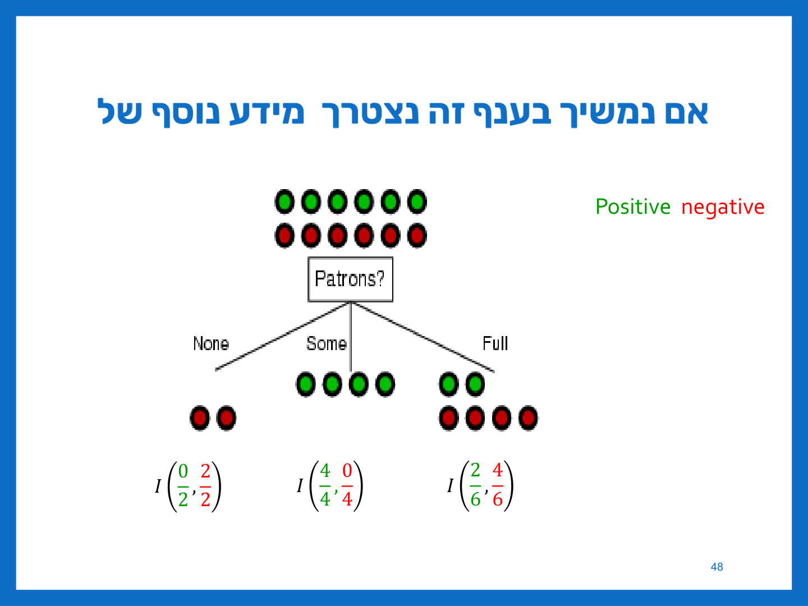
Information Gain — ההפרש בין כמות המידע שנדרשה לפני השימוש במאפיין לבין הכמות הנדרשת לאחריו:
IG(A) = I(p/(p+n), n/(p+n)) − remainder(A)
נבחר תמיד את המאפיין עם ה-Information Gain המקסימלי (שקול לבחירת remainder מינימלי).
חישוב עבור Patrons (עמ' 51, בדיוק 3 ספרות אחרי הנקודה):
rem(Patrons) = (2/12)·I(0/2,2/2) + (4/12)·I(4/4,0/4) + (6/12)·I(2/6,4/6)
= 1/6·0 + 1/3·0 + 1/2·I(1/3,2/3)
= 0.5 · 0.918 = 0.459
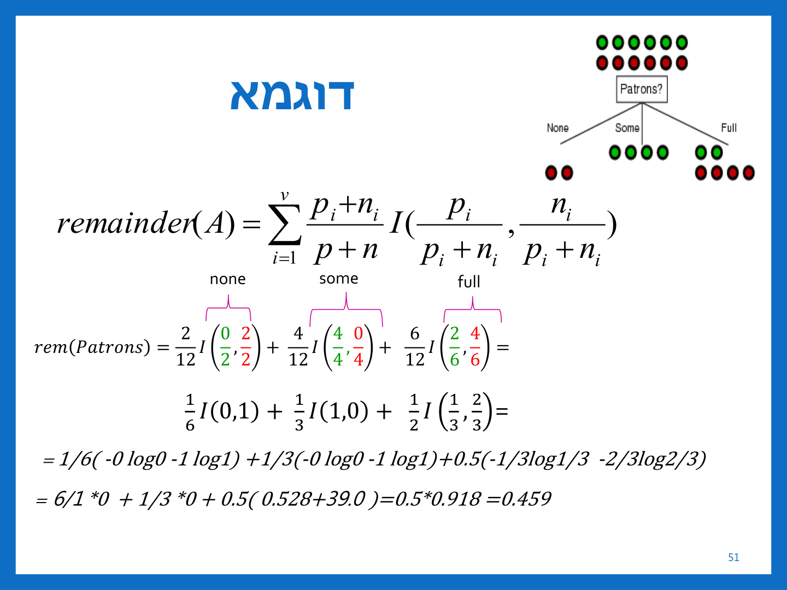
חישוב עבור Type (עמ' 52–53) — כל ארבעת הענפים שומרים על יחס 50/50:
rem(Type) = (2/12)·I(1/2,1/2) + (2/12)·I(1/2,1/2) + (4/12)·I(1/2,1/2) + (4/12)·I(1/2,1/2)
= (12/12)·I(1/2,1/2) = 1
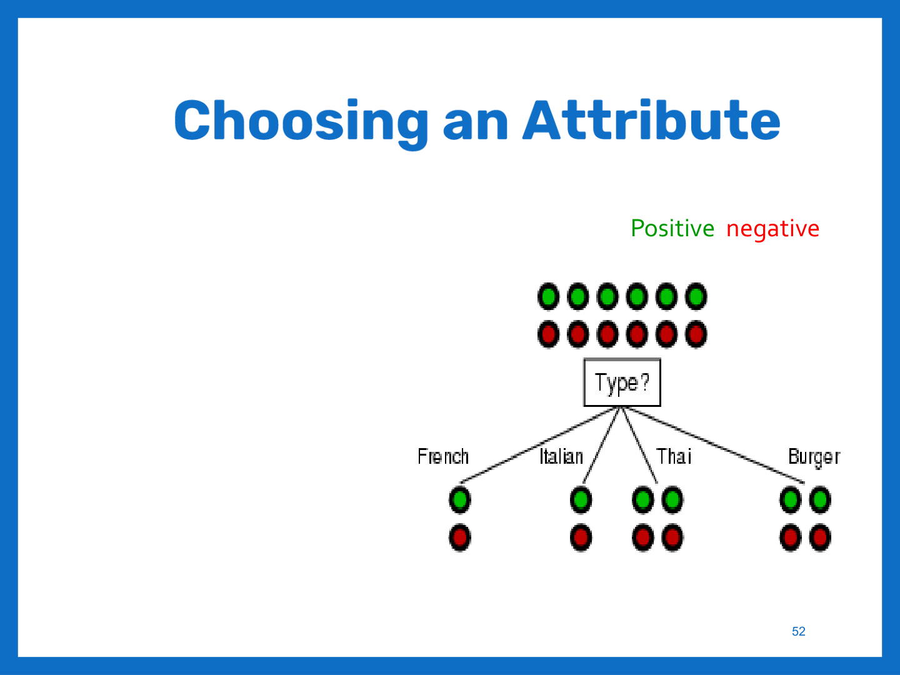
Information Gain — ההשוואה הסופית (I(6/12,6/12)=1):
IG(Patrons) = 1 − 0.459 = 0.541 bits IG(Type) = 1 − 1 = 0 bits
מקור: 15-decision-trees.pdf (עמ' 47–55)
6. אלגוריתם LEARN-DECISION-TREE (ID3/DTL) — ובניית עץ המסעדה
הפסאודו-קוד (מילה במילה מהשקף):
function LEARN-DECISION-TREE(examples, attributes, parent_examples) returns a tree
if examples is empty then return PLURALITY-VALUE(parent_examples)
else if all examples have the same classification then return the classification
else if attributes is empty then return PLURALITY-VALUE(examples)
else
A ← argmax_{a in attributes} IMPORTANCE(a, examples)
tree ← a new decision tree with root test A
for each value v of A do
exs ← {e : e in examples and e.A = v}
subtree ← LEARN-DECISION-TREE(exs, attributes − A, examples)
add a branch to tree with label (A = v) and subtree subtree
return tree
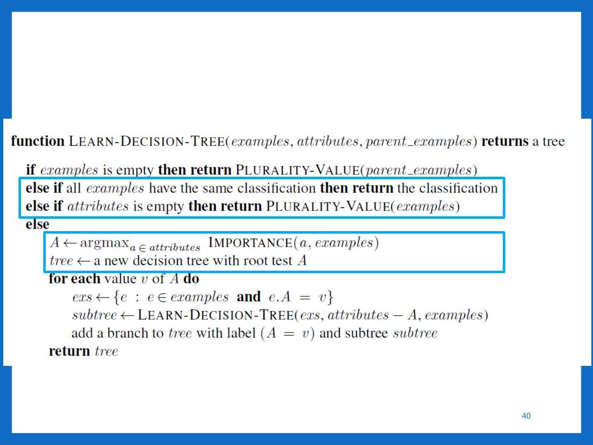
ארבעת המקרים בבניית העץ (ניסוח שקוף):
- אם כל הדוגמאות הנותרות באותו סיווג (כולן חיוביות או כולן שליליות) — העלה מקבל את הסיווג.
- אם לא נותרו דוגמאות כלל — לא נצפתה דוגמה כזו; מחזירים ערך default (PLURALITY-VALUE של דוגמאות ההורה).
- אם יש גם חיוביות וגם שליליות — בוחרים את המאפיין הטוב ביותר (IG מקסימלי), ובונים תת-עץ חדש לכל ערך שלו מהדוגמאות המתאימות בלבד.
- אם לא נותרו מאפיינים לבדוק ועדיין יש דוגמאות משני הסוגים — יש בעיה של רעש (noise) או שהמאפיינים אינם מספקים מספיק מידע. מחזירים ערך default.
בונים בפועל: אחרי בחירת Patrons כשורש — הענפים None ו-Some טהורים, הופכים מיד לעלים (No ו-Yes בהתאמה). הענף Full (2 חיוביות + 4 שליליות: x2,x4,x5,x9,x10,x12) עדיין מעורב — דורש המשך רקורסיבי מהמאפיינים הנותרים.
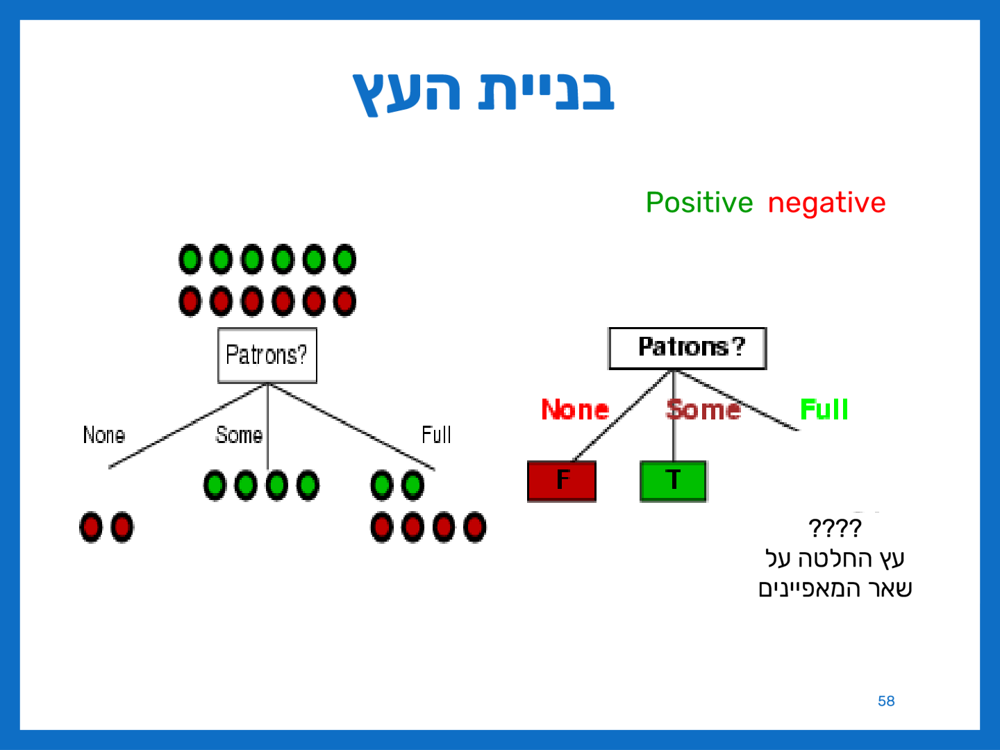
ממשיכים רקורסיבית על 6 הדוגמאות של Full בלבד, עם המאפיינים הנותרים (בלי Patrons). לפי אותו תהליך IG מתגלה ש-Hungry הוא המאפיין הבא, ואז Type, ואז Fri/Sat — עד שכל 12 הדוגמאות מסווגות.
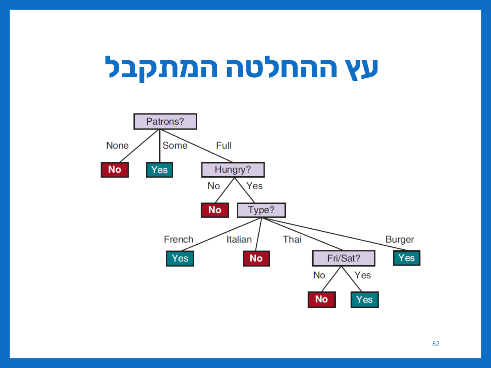
מקור: 15-decision-trees.pdf (עמ' 39–40, 56–59, 82)
7. תרגול כיתה מלא — האם סמי גולש?
תרגול נוסף מההרצאה, עם שלושה מאפיינים בלבד — מתאים כתרגיל trace קצר ומלא מקצה לקצה. 8 דוגמאות של החלטות עבר של סמי:
| מס' | מזג אוויר | גובה גלים | צפיפות בחוף | החלטה |
|---|---|---|---|---|
| 1 | נעים | גבוה | לא צפוף | כן |
| 2 | סוער | גבוה | לא צפוף | כן |
| 3 | מעונן | נמוך | לא צפוף | כן |
| 4 | נעים | גבוה | לא צפוף | לא |
| 5 | סוער | גבוה | לא צפוף | לא |
| 6 | מעונן | נמוך | צפוף | לא |
| 7 | סוער | נמוך | צפוף | לא |
| 8 | מעונן | נמוך | צפוף | לא |
p=3 ("כן"), n=5 ("לא"). שלב 1 — כמות המידע בבעיה:
I(3/8, 5/8) = −0.375·log(0.375) − 0.625·log(0.625)
= −0.375·(−1.415) − 0.625·(−0.678) = 0.954
שלב 2 — remainder לכל מאפיין:
rem(waves) = (4/8)·I(2/4,2/4) + (4/8)·I(1/4,3/4) = 0.5·1 + 0.5·0.811 = 0.906 rem(beach) = (3/8)·I(0/3,3/3) + (5/8)·I(3/5,2/5) = 0 + 0.625·0.970 = 0.606 rem(weather) = (2/8)·I(1/2,1/2) + (3/8)·I(1/3,2/3)·2 = 0.25·1 + 0.75·0.918 = 0.938
שלב 3 — Information Gain:
IG(waves) = 0.954 − 0.906 = 0.048 IG(beach) = 0.954 − 0.606 = 0.348 ← המקסימלי IG(weather) = 0.954 − 0.938 = 0.016
צפיפות בחוף נבחרת כשורש. ענף "צפוף" (דוגמאות 6,7,8 — כולן "לא") טהור → עלה מיידי "לא גולש". ענף "לא צפוף" (דוגמאות 1–5, 3 כן + 2 לא) ממשיך רקורסיבית.
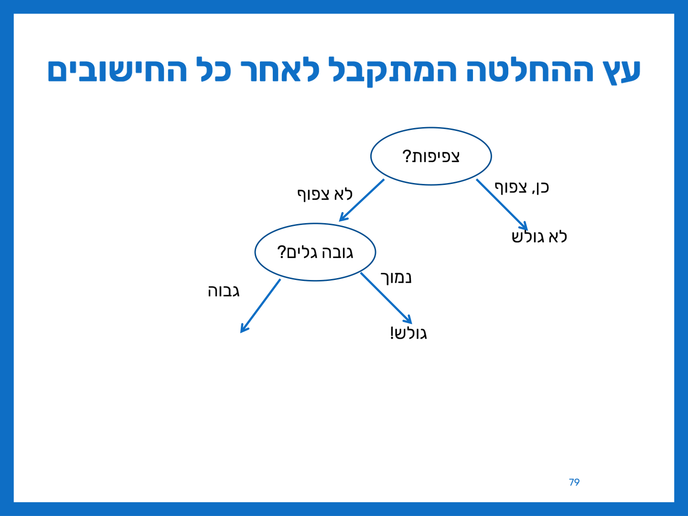
בתת-הבעיה (דוגמאות 1–5): I(3/5,2/5)=0.97. שני המאפיינים הנותרים (waves, weather) נותנים remainder=0.8 ו-IG=0.17 שווים בדיוק — תיקו. בוחרים גובה גלים (מנומק בשקפים). ענף "נמוך" (דוגמה 3 בלבד) טהור → גולש!; ענף "גבוה" (דוגמאות 1,2,4,5 — 2 כן + 2 לא) ממשיך עם המאפיין האחרון שנותר — מזג אוויר. בכל אחד מערכיו (נעים, סוער, מעונן) אין הכרעה חד-משמעית או שאין דוגמאות כלל — כל שלושת העלים מקבלים ערך default.
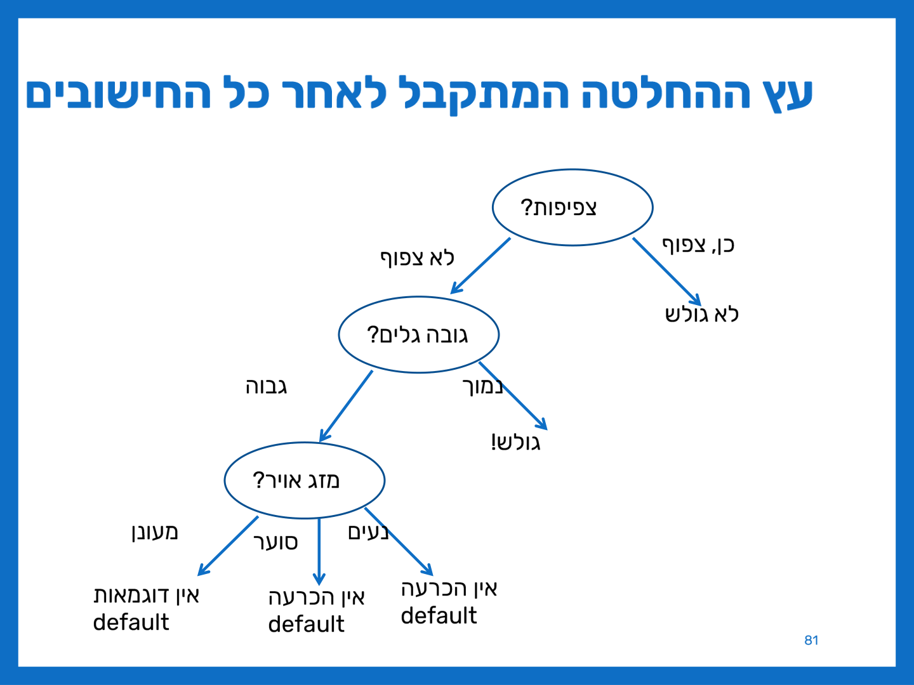
מקור: 15-decision-trees.pdf (עמ' 60–83)
8. מאפיינים רציפים ופלט רציף
כשלמאפיין יש ערכים שלמים ומתמשכים (כמו גובה ומשקל), אי אפשר להוציא ענף לכל ערך אפשרי מקודקוד המבחן — יהיו אינסוף ענפים בעקרון. הפתרון: למצוא נקודות פיצול שמחלקות את טווח הערכים למספר קטן של תחומים (בדיוק כמו WaitEstimate שכבר חולק מראש ל-4 תחומים: 0-10, 10-30, 30-60, >60). רוצים שנקודות הפיצול עצמן ייבחרו כך שיתנו את ה-gain הטוב ביותר — פתרון זה דורש אלגוריתם תכנות דינמי, ומייקר משמעותית את הלמידה.
וכשהפלט עצמו רציף (למשל מחיר, ולא סיווג בדיד) — עץ החלטה רגיל אינו הפתרון המתאים. משתמשים בעץ רגרסיה: בכל עלה יש פונקציה ליניארית של תת-קבוצת מאפיינים מספריים, במקום ערך סופי בודד. אלגוריתם הלמידה צריך להחליט מתי להפסיק לפצל ולתת פונקציה במקום המשך פיצול.
מקור: 15-decision-trees.pdf (עמ' 84–85)
9. הערכת ביצועים — קבוצת מבחן ועקומת למידה
כשפונקציית המטרה אינה ידועה — איך יודעים אם ההיפותזה שמצאנו טובה? בנוסף לקבוצת האימון שעל פיה בונים את ההיפותזה, אוספים קבוצת מבחן נפרדת, מאותה התפלגות כמו קבוצת האימון:
- אוספים הרבה דוגמאות.
- מחלקים לקבוצת אימון וקבוצת מבחן.
- מפעילים את אלגוריתם הלמידה על קבוצת האימון ליצירת h.
- מודדים את אחוז הדוגמאות מקבוצת המבחן שנצפו נכון ע"י h.
- חוזרים על 2–4 לגדלים וחלוקות שונות, ובוחרים את הטובה ביותר.
הגרף שמתקבל — אחוז ההצלחה על קבוצת המבחן כפונקציה של גודל קבוצת האימון — נקרא עקומת למידה.
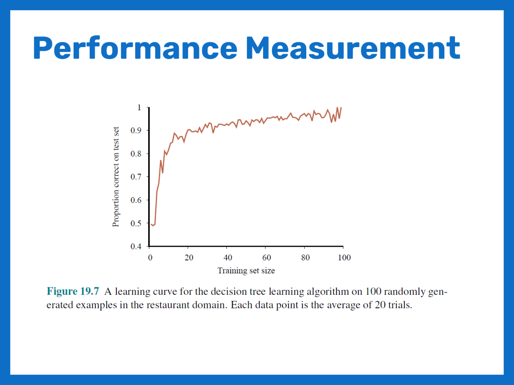
מקור: 15-decision-trees.pdf (עמ' 86–88)
10. Overfitting ו-Cross-Validation
קיימת סכנה שההיפותזה שנמצא תהיה צמודה מדי לקבוצת האימון — Overfitting — ותשתמש בכללים חסרי משמעות אמיתית, שרלוונטיים רק לרעש הספציפי בקבוצת האימון ולא לפונקציה האמיתית. שלושה כיווני פתרון:
- דוגמאות מפוזרות באופן אחיד על מרחב הבעיה (לא רק מקרים קיצוניים).
- גיזום העץ ממאפיינים לא רלוונטיים — נמדד בכלים סטטיסטיים.
- Cross-validation — מחלקים את קבוצת האימון לחלקים, ובכל פעם בונים עץ כשחלק אחר משמש קבוצת מבחן; מחשבים ממוצע של כל ההרצות.
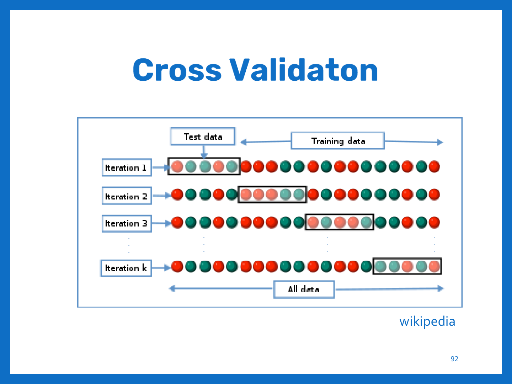
מקור: 15-decision-trees.pdf (עמ' 89–92)
11. למידה בהרכב — Ensemble ו-Boosting
כדי לשפר למידה, בונים מספר היפותזות (למשל 100 עצי החלטה שונים) ומשלבים את צפיותיהן — Ensemble Learning. בהינתן דוגמה חדשה, מריצים אותה על כולן ובוחרים במה שהרוב הכריעו. הרעיון: כדי שהשילוב יטעה, צריך שרוב העצים יטעו יחד — הרבה פחות סביר מטעות של עץ בודד.
Boosting משפר היפותזה חלשה (רק מעט טובה מהחלטה אקראית) להיפותזה טובה מאוד: לכל דוגמה j נותנים משקל wⱼ שבתחילה שווה 1 לכולן. בונים h₁ — מסווג חלק נכון וחלק שגוי. מעלים את המשקל של הדוגמאות השגויות ומורידים את משקל הנכונות, ובונים מהסט הממושקל מחדש את h₂. התהליך ממשיך עד M היפותזות. ההכרעה הסופית — ממוצע משוקלל של הכרעות כל ההיפותזות, כשמשקל כל היפותזה תלוי באחוזי הצלחתה.
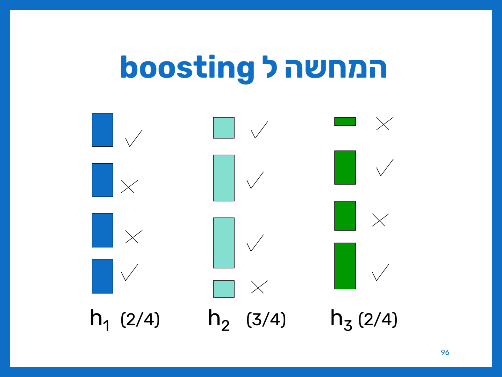
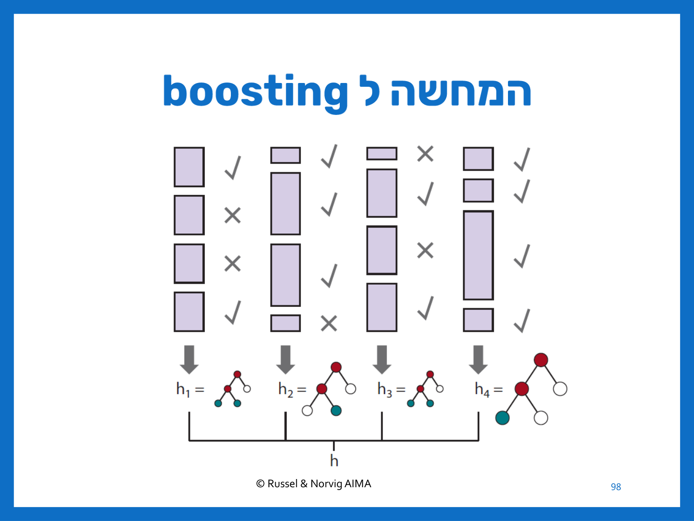
מקור: 15-decision-trees.pdf (עמ' 93–98)
12. סיכום דרך העבודה ומלכודות למבחן
סיכום דרך העבודה לבניית עץ החלטה (5 צעדים):
- מחשבים את המידע החסר I בבעיה (בהתחלה — מכל הדוגמאות; בשלבים מתקדמים — רק מהדוגמאות הרלוונטיות לענף הנוכחי).
- לכל מאפיין מחשבים כמה מידע יישאר חסר לאחר השימוש בו — remainder.
- לכל מאפיין מחשבים כמה מידע הוא תורם — Information Gain.
- בוחרים את המאפיין עם ה-IG המקסימלי כשורש תת-העץ הנוכחי.
- מחלקים את הדוגמאות לפי ערכי המאפיין הנבחר; ענף עם סיווג יחיד → עלה, ענף מעורב → חוזרים לצעד 1 (בלי המאפיין שכבר נוצל).
| ערך I | משמעות |
|---|---|
| I(1,0) = I(0,1) = 0 | ענף טהור — אין אי-ודאות כלל |
| I(0.5,0.5) = 1 | אי-ודאות מקסימלית (50/50) |
| I(1/3,2/3) = 0.918 | ערך חוזר בהרבה תרגילים |
| I(1/4,3/4) = 0.811 | ערך חוזר בהרבה תרגילים |
מקור: 15-decision-trees.pdf (סיכום היחידה)
13. תרגיל הבית — תרגיל 11 (הופעת הרוק של סמי)
הורדות: שאלת התרגיל (ex11.pdf) · הפתרון המלא (sol11.pdf).
בינה מלאכותית תרגיל 11
נתונות הדוגמאות הבאות לבעיית ההחלטה האם ללכת להופעה של מוסיקת רוק כפי שנצפה סמי מחליט בעבר:
דוגמא יש חניה באיזור? יש עם מי ללכת? אני מכיר את השירים? סמי הלך להופעה? 1 לא אלך לבד מכיר חלק מהשירים לא 2 כן חבר יבוא איתי מכיר חלק מהשירים כן 3 לא אלך לבד מכיר חלק מהשירים כן 4 כן חבר יבוא איתי מכיר את כל השירים כן 5 כן אלך לבד מכיר את כל השירים כן 6 לא חבר יבוא איתי לא מכיר לא 7 כן חבר יבוא איתי לא מכיר כן בשאלה זו נדרש דיוק של 3 ספרות אחרי הנקודה.
א. [5 נקודות] העריכו את כמות המידע הנדרשת לקבל החלטה נכונה שתצפה נכונה את חשיבתו של סמי האם ללכת להופעה או לא. נמקו התשובה על ידי חישוב.
ב. [5 נקודות] מה המשמעות? יש צורך בהרבה ידע או מעט?
ג. [90 נקודות] בנו עץ החלטה לפי הדוגמאות הנתונות. חובה לפרט את החישובים המתבצעים להחלטה איזה מאפיין הוא הטוב ביותר בכל שלב (כפי שעשינו בהרצאה).
א. 5 דוגמאות "כן" ו-2 דוגמאות "לא" מתוך 7 (p=5, n=2):
I(5/7, 2/7) = −5/7·log(5/7) − 2/7·log(2/7) = 0.863
ב. יש צורך בהרבה ידע. חוסר הוודאות גבוה מאוד — לא רחוק מהמקסימום של חוסר מידע שהוא 1.
ג. ראשית מחשבים remainder לכל אחד משלושת המאפיינים:
Rem(parking) = 4/7·I(4/4,0/4) + 3/7·I(1/3,2/3) = 4/7·0 + 3/7·0.918 = 0.393 Rem(friend) = 4/7·I(3/4,1/4) + 3/7·I(2/3,1/3) = 4/7·0.81 + 3/7·0.918 = 0.856 Rem(songs) = 2/7·I(1,0) + 3/7·I(2/3,1/3) + 2/7·I(1/2,1/2) = 0 + 3/7·0.918 + 2/7 = 0.679
Gain(parking) = 0.863 − 0.393 = 0.47 ← המקסימלי Gain(friend) = 0.863 − 0.856 = 0.007 Gain(songs) = 0.863 − 0.679 = 0.184
יש חניה? נבחר כשורש. כן (דוגמאות 2,4,5,7 — כולן "כן") — טהור, עלה מיידי. לא (דוגמאות 1,3,6 — 1 כן + 2 לא) ממשיך רקורסיבית.
בתת-הבעיה (דוגמאות 1,3,6 בלבד): I(1/3, 2/3) = 0.918.
Rem(friend) = 1/3·I(0/1,1/1) + 2/3·I(1/2,1/2) = 0 + 2/3·1 = 0.667 Rem(songs) = 2/3·I(1/2,1/2) + 1/3·I(0,1) = 2/3·1 + 0 = 0.667 Gain(friend) = 0.918 − 0.667 = 0.251 Gain(songs) = 0.918 − 0.667 = 0.251 ← תיקו!
הרווח זהה — בוחרים במאפיין שיוצר פחות ענפים: "יש עם מי ללכת" (2 ערכים אפשריים) על פני "מכיר שירים" (3 ערכים אפשריים).
העץ הסופי:
- שורש: יש חניה?
- ענף כן ← עלה כן ללכת להופעה
- ענף לא ← חבר מצטרף?
- ענף כן ← עלה לא ללכת להופעה
- ענף לא, אלך לבד ← מכיר שירים?
- "חלק מהשירים" ← יש דוגמאות סותרות (מס' 1 ו-3) — default
- "את כל השירים" ← אין דוגמאות בתת-קבוצה זו — default
- "לא מכיר" ← אין דוגמאות בתת-קבוצה זו — default
מקור: ex11.pdf (עמ' 1), sol11.pdf (עמ' 1–3)
14. בדיקה עצמית
מהי המשמעות של I(0.5, 0.5) = 1 ביט?
בבעיית המסעדה, מדוע נבחר Patrons כמאפיין השורש ולא Type?
חושבו: rem(Type) = 1, בדיוק כמו I(6/12,6/12) ההתחלתי. מה המשמעות?
בתרגול הגלישה של סמי (8 דוגמאות), איזה מאפיין נבחר כשורש העץ, ומדוע?
מדוע שילוב של הרבה עצי החלטה (Ensemble) מסווג לרוב טוב יותר מעץ בודד?
האם עץ החלטה שמתאים באופן מושלם (עקבי) לכל דוגמאות האימון הוא תמיד מצב בעייתי?
באלגוריתם Boosting, מה קורה למשקל של דוגמה שסווגה נכון ע"י ההיפותזה הנוכחית?
מדוע לא ניתן פשוט לתת ענף נפרד לכל ערך אפשרי במאפיין רציף (כמו גובה או משקל)?
סיימתם את הפרק? סמנו אותו כהושלם: